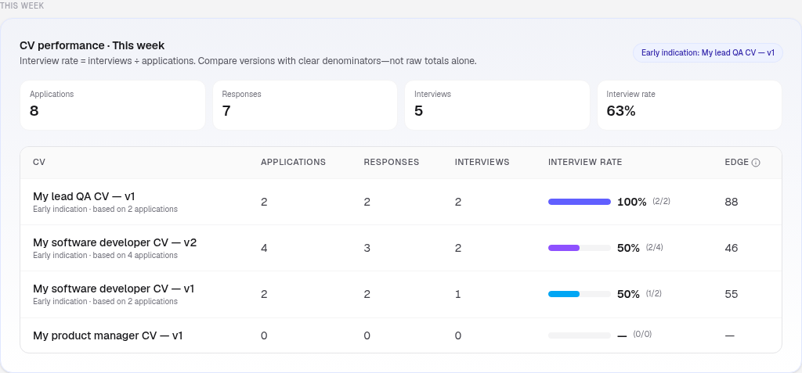

A weekly job-search review that takes 15 minutes
Job searches drift. Applications pile up, follow-ups slip, and you only notice the mess when a Sunday evening turns into a two-hour "where did I apply?" archaeology session.
A short weekly review fixes more than motivation tips ever will. Fifteen focused minutes beat an occasional heroic tidy-up.
This is not a productivity ritual with trophies. It's a calm reset: organise, choose next steps, glance at what's working.
Why weekly (and why only 15 minutes)
Daily tracking invites obsession. Monthly tracking invites amnesia. Weekly sits in the middle: fresh enough to remember context, spaced enough that you're reviewing a real sample of activity.
Cap it at 15 minutes so you'll actually do it. If you regularly need 45, your system is too heavy, simplify fields, not your standards. The review should feel like clearing a kitchen counter, not renovating the kitchen.
Pick a recurring slot you'll protect: Friday lunch, Sunday late morning, Monday before deep work. Same time beats "when I feel ready."
The 15-minute agenda
Use a timer. Work in this order.
Minutes 1-4: Clean the board

- Add any applications missing from the last week
- Move cards to the right stage (Wishlist, Applied, Response, Interview, Offer)
- Close anything that's clearly dead (rejection, withdrawn, ghosted past your policy)
- Fix duplicate or vague role titles while you're there
Honesty keeps the pipeline useful. Zombie "still waiting?" cards create false busyness and inflate how "active" your search feels.
Minutes 5-9: Next steps only
For every live opportunity:
- Confirm there is one next step
- Confirm it has a rough date
- Delete vague steps like "chase somehow"
- Promote interview prep when a date is near
Examples of good next steps:
- Follow up with hiring manager (Thu)
- Send portfolio PDF promised in screen
- Prep two stories for panel on Tuesday
- Close role, no reply after second nudge
If you have more than a handful of live roles, prioritise the ones with interviews or near-term dates first. Everything else gets a fair follow-up date, not equal emotional weight.
Minutes 10-13: Feedback glance

Ask only:
- Which CV version saw applications this week?
- Any change in interview rate worth noticing (remember: small samples are early indications)?
- Did my sources change (more referrals, more cold applies)?
- What one adjustment will I make next week, targeting, version, or follow-up timing?
You're looking for a personal feedback loop, not a performance review of your self-worth. Numbers describe the pipeline; they don't grade you as a person.
Minutes 14-15: Choose next week's focus
Pick three concrete actions for the coming week. Examples:
- Apply to four roles that match version v2's sweet spot
- Send two follow-ups that are due
- Update one CV section you're deliberately testing
- Book a mock interview or coffee chat you've been postponing
Write them where you'll see them. Then stop. The power of the review is the stop, so the rest of your week isn't spent half-managing the search in the back of your mind.
What not to do in the review
- Don't rewrite your entire CV every Sunday
- Don't apply to twenty random roles to "catch up"
- Don't spiral through old rejection emails
- Don't build a new colour-coding scheme
- Don't compare your week to someone else's highlight reel online
Review is maintenance. Deep work (serious CV edits, interview prep, portfolio updates) gets its own block outside the fifteen minutes.
A tiny template you can reuse
Week of: ____ Board cleaned? Y/N Live opportunities: __ Follow-ups due next 7 days: - - CV notes (early indications OK): - Version __ : apps __ / interviews __ Three focus actions: 1. 2. 3.
Keep the template short. Simple systems are easier to stick with under stress. If the template grows longer than a page, cut it.
Make the review easier with the right workspace
The review goes faster when applications, stages, notes, and CV versions already live together. Spreadsheet archaeology eats the whole fifteen minutes before you've chosen a next step.
If you want to see a board-plus-insights shape, try the InterviewAlpha interactive demo: pipeline stages, CV vault, and interview-rate insights in one place, no sign-up required. Privacy on the current site is framed around local storage and your control over clearing the workspace, not cloud accounts or paid plans as live features. A fuller product is coming; the demo is there to explore the calm workflow first.
Unlike spray-apply or AI resume tools, InterviewAlpha is built around organisation, next step, and personal feedback.
Keep the habit kind
Miss a week? Don't double-punish yourself with a marathon. Do a 15-minute catch-up and continue. Consistency beats intensity.
If a week was emotionally hard (a rejection sting, a stalled process), still do the hygiene pass (clean and next-step) and skip the deep CV analysis until you have the headspace. The board can wait for wisdom; it shouldn't wait for perfection.
A job search is already emotionally expensive. Keep the review small and practical so you actually finish it.